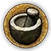

SEZNAM SVATEBNÍCH HOSTŮ
Každá postava má dvě ikonky, které naznačují, o čem převážně bude hra:

Romantika
Politika
✦

Intriky

Zdravotnictví
Těchto 27 hostů je seřazeno podle důležitosti u svatební tabule.
Jan Ptáček z Pirkštejna
Ženich. Dědic Pirkštejna a Ratají, které zatím spravuje jeho strýc.
Jitka z Kunštátu
Nevěsta, jejíž věno zajistí pánům z Lipé vliv na Moravě.
Hanuš z Lipé
Strýc a opatrovník Jana Ptáčka, dočasný správce Ratají.
Racek Kobyla ze Skalice
Bývalý správce Stříbrné Skalice a otec Jindřicha ze Skalice.
Erhart z Kunštátu
Otec nevěsty a správce Kunštátu.
Markéta z Kunštátu
Matka nevěsty a manželka Erharta z Kunštátu.
Boček z Kunštátu a Poděbrad
Strýc nevěsty a zakladatel poděbradské větve rodu z Kunštátu.
Kunzlin Ruthard z Malešova
Majitel malešovské tvrze, organizátor svatby.
Róza Ruthardová z Malešova
Dcera Kunzlina Rutharda, dědička rodu.
Albík z Úničova
Osobní lékař krále Václava IV., profesor na pražské univerzitě.
Opat Jan III.
Opat Sedleckého kláštera, nejvyšší církevní autorita v kraji.
Diviš z Talmberka
Pán na hradě Talmberk.
Štěpánka z Talmberka
Manželka Diviše z Talmberka.
Anna z Valdštejna
Vdova po Vilémovi z Valdštejna, správkyně několika tvrzí.
Jindřich ze Skalice
Osobní strážce Jana Ptáčka a nemanželský syn Racka Kobyly.
Hynek 'Suchý Čert' z Kunštátu
Bratranec nevěsty a loupeživý rytíř ve službách Sokola z Lamberka.
Jan Žižka z Trocnova
Velitel žoldnéřů ve službách Sokola z Lamberka.
Bohuta
Žoldnéř a bývalý kněz.
Kuběnka
Žoldnéř a ostrostřelec.
Kateřina
Špionka ve službách Jana Žižky z Trocnova.
Černý Bartoš
Velitel stráží na Malešově.
Anežka
Sestra Jana Žižky z Trocnova a obchodnice.
Bohunka
Hlavní služebná rodiny Ruthardů.
Helena
Schovanka opata Jana III.
Tereza
Dcera mlynáře, která dodává pečivo na svatbu. Milá Jindřicha ze
Skalice.
Božena
Kořenářka, bývalá porodní bába.
Pavlena
Nevlastní dcera Boženy.
Přihlašování
Tato hra nemá klasické přihlašování – na první dva běhy je potřeba pozvánka. Pokud máte pozvánku na
svatbu, vyplňte prosím formulář níže.
✒ Potvrdit účast
Abychom byli transparentní, na 1. beta běh zveme hlavně naše kamarády z larpové komunity a
typecastujeme jim role. Chceme tak zajistit hladký průběh hry a získat kvalitní
zpětnou vazbu. Na druhý běh zveme KCD cosplayery, kteří patří k největším fanouškům hry. Zbývající
místa pak obsadíme běžným přihlašováním.